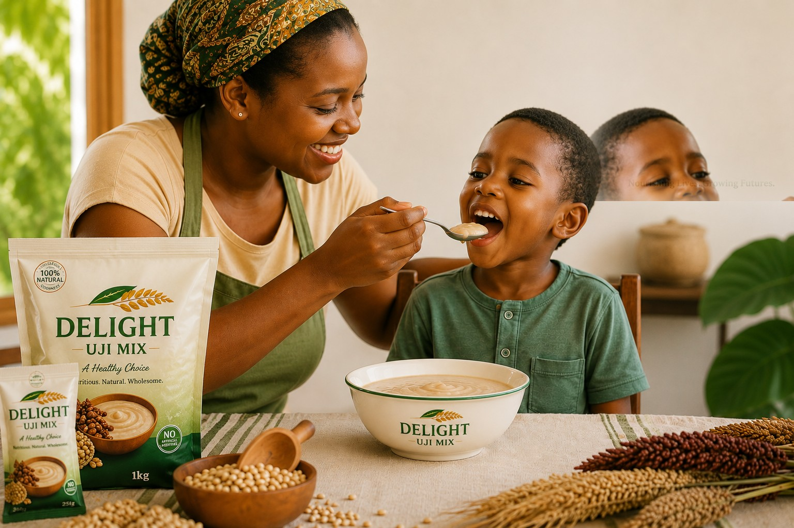
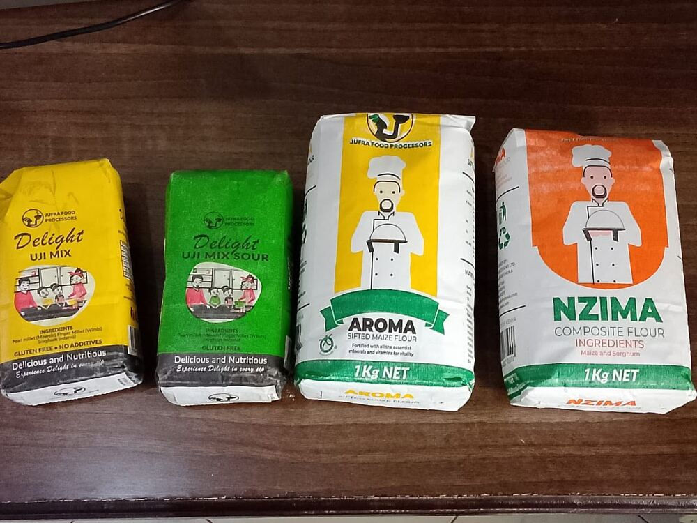
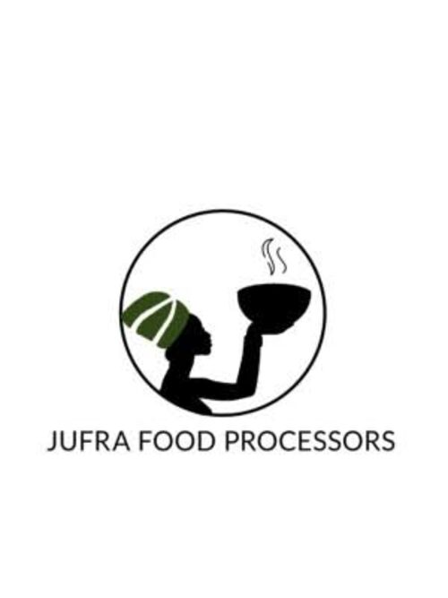

We transform locally sourced indigenous grains into nutritious, high-quality food products that nourish families, empower farmers, and contribute to healthier communities across Kenya.

Indigenous grains outperform refined staples on almost every nutritional measure — and they're built for East Africa's climate.
Gluten-free, low-GI energy that's gentle on blood sugar.
One of the richest plant sources of calcium available.
Drought-resilient grain packed with slow-release energy.
A complete protein, rare among grains — ideal for growing bodies.

Our flagship porridge blend of pearl millet, finger millet and sorghum — gluten-free with no additives.

A maize and sorghum blend built for everyday cooking and baking, at 1Kg net.
Fine-sifted, fortified maize flour with essential minerals and vitamins for everyday vitality.
Seven honest steps between a farmer's field in Tharaka-Nithi and your kitchen table.
Smallholder growers plant and tend indigenous grain varieties.
Grain is hand-harvested at peak maturity for maximum nutrition.
Every batch is cleaned and sorted to remove impurities.
Lab checks confirm purity, moisture and nutrient content.
Grain is milled with no chemicals, preservatives or additives.
Sealed fresh in family and bulk sizes at our Chuka facility.
Delivered to retailers and homes across East Africa.
Jufra was profiled by the Micro and Small Enterprises Authority for its work in agro-processing, value addition, and creating more than 400 youth employment opportunities.
Read the RecognitionThis recognition affirms what we've always believed — that indigenous grains, processed with care, can create both nutrition and opportunity for our communities.
— Julius Mwebia, Director, Jufra Food Processors
Jufra buys my sorghum at a fair price, every season, without fail. That reliability changed how I plan my farm.
My children actually ask for their porridge now. It's the only flour in our house that doesn't upset small stomachs.
Jufra products move fast on our shelves — customers specifically ask for the millet blend by name.
MSEA recognized Jufra's agro-processing and youth employment impact.
A new everyday cooking flour joins the Jufra product family.
Another cohort of smallholder farmers joins the Jufra supply network.
Get recipes, nutrition tips and product updates from Jufra, straight to your inbox.